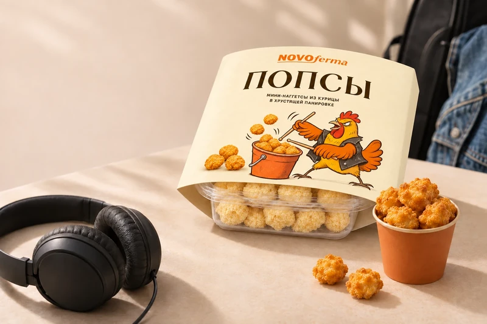

Курица и индейка
Мясо птицы — основа нашего ассортимента. А дальше — разные вкусы, формы и ваши любимые сочетания.
Новоферма · Санкт-Петербург
Любимая еда. Тёплая компания.
И побольше времени друг для друга.

Вот что нас объединяет
Мы — Новоферма из Санкт-Петербурга. Делаем замороженные продукты из курицы и индейки, с которыми легко придумать обед, ужин или перекус.
Нам близки простые вещи: знакомый вкус, любимый гарнир и разговоры за столом. Поэтому в нашем ассортименте — котлеты, фрикадельки, наггетсы и стрипсы. Еда, для которой всегда найдётся повод.
Мясо птицы — основа нашего ассортимента. А дальше — разные вкусы, формы и ваши любимые сочетания.
Фрикадельки к пюре, котлеты к овощам, наггетсы к соусу. Выбирайте под настроение и собирайте свой стол.
Прозрачный контейнер, информация на обечайке и наши курочки, по которым легко узнать Новоферму.
Вкусно быть вместе
 Вариант подачи
Вариант подачиПобольше соусов, любимые закуски — и вечер в хорошей компании.

Вариант подачиМузыка, любимый соус и Попсы. Немного времени для себя — тоже хороший план.
Познакомиться с ПопсамиОткрыто о главном
Нам нравится, когда выбор понятен ещё у полки.
Через прозрачный контейнер можно рассмотреть продукт до покупки. На обечайке — название и информация о нём. А рядом — наша курочка. Привет, это мы!
Рассмотреть фрикадельки
Ну что, к столу?
Загляните в каталог. Там наверняка найдётся что-то для ваших.